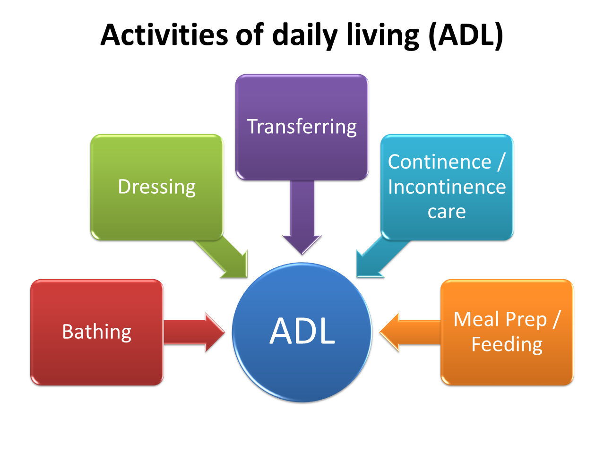

Health care is very important to keep you and your family safe and covered throughout your life . There are many different types of health care that an individual that purchase or apply for through the government. Many people either have health insurance through their job, the government, or individual plans through private health insurance companies. Health insurance helps provide financial coverage for certain procedures, medicine, doctor visits, and much more. However, one type of care that is generally not covered through a normal health insurance plan is Long-Term Care (LTC). Long-Term Care involves a wide variety of support service to help people live independently who needs assistance. There are different types of LTC that an individual can get but the main types are home based care, community care, adult daycare, and assisted living homes. The type of service an individual requires depend on the amount of help they need. Insurance companies will determine this by looking at 6 factors called the activities of daily life (ADLs). (See figure 1) To qualify for financial assistance from your LTC plan, an indivudal must need assistance with at least 2 out of the 6 ADLs. Depending on how many they need assistance with will determine what type of care they will need.
There are many different LTC that an indicual can receive. The main types are home based care, adult day care, home nurses/aids, and assited living homes. Home based care is when the indivudal stays or gets checked in on with family members or friends or help them with whatever ADL they need assitance for. This care is the cheapest care compared to the others but requires a lot of time from your caretaker. This puts stress and puts a burden on the family to try their best to care for the indivudual. Depending on the severity of assitance that is needed, this could be a good affortable option for the indivudal. The next step up is an adult day care setting. This is for indivudals who need a little more assistance and cannot be left alone during the day. This is a good option for families who work durinf the day and cannot provide 24/7 care for the indivudal. Prices for this care tend to be more than home care but a lot cheaper than a full time home. Finally, the last and most common type of care is an assited living home. An indivudal could be placed in one of these homes for many different reasons but is the best type of care for an indivual who needs full 24/7 support where they can be watched and cared for all the time. This option is by far the most expensive option and could put a tremendous burden on the indivual or family financing it. However, in many cases, it is unavoidable that an indivual will need to be placed in an assisted living home.
There are many steps that need to be taken in order to decide what LTC an individual needs. The main factors come down to the severity of the assistance and the finances an indivual has. In an article that surveyed individuals whether or not they know what to expect in the future for LTC or if they feel ready to be able to pay for LTC, they found this, "Americans are confused about how they might pay for any needed care. The source that most Americans aged 40 and older expect to rely heavily on to pay for ongoing living assistance is Medicare, which 57 percent say they will rely on quite a bit or completely." (5) While Medicare covers basic necessity and other health issues, LTC is generally not covered at all under Medicare. This means a majority of these individuals will lack the means to support themselves if they need any form of LTC. This suggests that a big part of this issue is the lack of education about LTC. Many individuals do not realize that LTC is not covered under their main health insurance plan which is putting them in financial harm down the road. The first issue I want to research is looking into how much Americans actually know about LTC and the different types of plans that are there. If more people know about LTC coverage at an earlier age, it is easier to set up a policy for their future and start financing it sooner rather than later. There is also an advantage to starting an LTC plan earlier than later, as LTC plans usually are more expensive at an older age since you have a higher risk of needing assistance later on in life
On average, a female will need 3.7 years of long-term care services while a male will need 2.2 years./p>On average, a female will need 3.7 years of long-term care services while a male will need 2.2 years.
20% of Americans over 65 will need long-term-care for more than 5 years.
The average American will spend $172,000 on long-term care costs (PWC).
In 2022, the annual median cost for long term care services was $94,900-$108,405 nationally.
Only 7.5 million Americans, or about 3.3% of the population, has long term care insurance.
There are over 800,000 senior Americans residing in an Assisted Living Facility.
Nearly 70% of people over 65 will need some form of LTC during their lifetime.
88% of Americans prefer home care over institutionalization.
The average annual cost of LTC insurance is $2,220 for a 55 year-old male and $3,700 for a 55 year-old female.
| Question | Yes | No | Unsure/Maybe |
|---|---|---|---|
| Do you have health insurance? | 96.7% | 3.3% | 0 |
| Do you have a LTC plan? | 5.7% | 56.7% | 36.7% |
| Are you familiar with LTC insurance? | 33.3% | 66.7% | 0 |
| Are you familiar with the cost associated with LTC insurance? | 20% | 80% | 0 |
| Are you aware of different types of LTC insurance? | 13.3% | 73.3% | 13.3% |
| Have you discussed LTC insurance with an advisor or family member? | 13.3% | 86.7% | 0 |